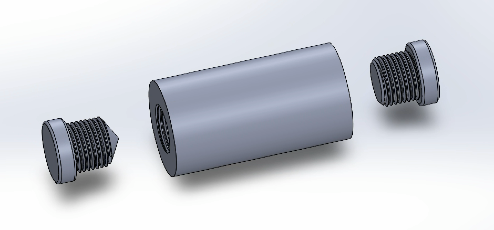

SolidWorks Design & 3D Printing
From CAD modeling to physical prototypes, focusing on functional mechanical parts.
The Bottle Project: Solving for Threads
One of my recent challenges is designing a screw-on lid with specific tolerances to ensure a tight seal. I am using SolidWorks to iterate through different thread profiles.

V1: Initial Prototype
Focus was on basic thread engagement. Created a cylinder with taps on both side. one side used the Hole wizard feature and has 118º point. Other is done simpler with flat ended die. Both die have a diameter of 2.48in and both taps have a diameter of 2.53. Waiting to be able to print to test fitment.